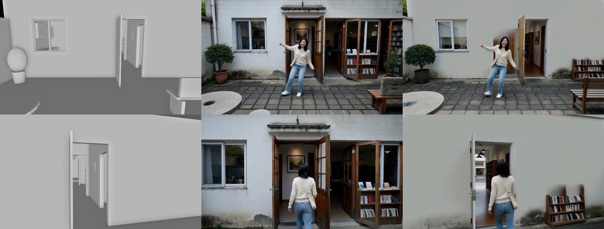
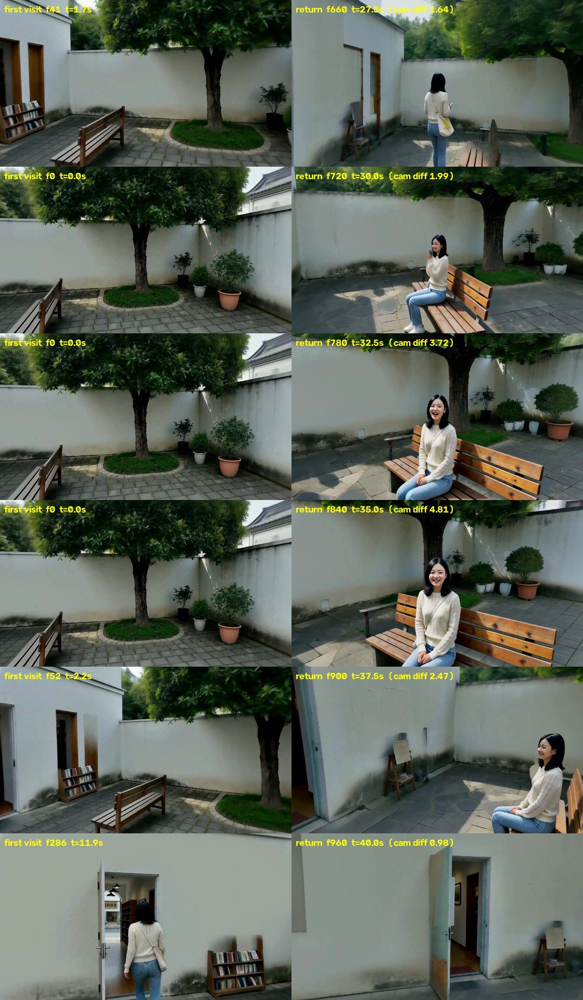

一镜到底：从一段剧本到分钟级、带对白的连续镜头
任务
输入：一段剧本，粗糙的也可以，由规划器补全。可选：参考动作视频、人物照片、参考声音。
输出：分钟级、中间不剪辑的一条连续镜头，写实，带对白和环境声。相机可以穿门过廊，也能回到之前去过的地方。
难点：视频模型一次最多生成约 15 秒，只能分段生成再无缝接上；回到老地方时，场景、人、声音都要和之前一样；人不穿家具；动作要符合剧本或参考动作。
方法：一个世界状态，每段做三件事
世界状态 = 白模（3D 布局、人物去哪、相机怎么走）+ 三种记忆（场景长什么样、人长什么样、声音是什么样）。开拍前，场景记忆的初值就是白模本身：哪里是平墙、哪里有门窗，还没拍到之前就已经知道。
开拍前：大模型把剧本写成白模和剧情节拍 → 按剧情切段（交接放在镜头和人都闲的时候）→ Blender 渲染白模 → 从白模算出每段"镜头对着什么、人第几秒进画面、左右站位" → 大模型据此写每段的 prompt。
每一段：① 从世界状态渲染条件：深度、场景记忆、人物参考图、音色、动作参考 → ② H3 生成一次（4 张卡）→ ③ 登记回世界：画出来的场景贴回 3D，人抠出来存进人物记忆，台词存进声音记忆。
| 条件 | 怎么来 | 作用于哪几步（共 8 步） |
|---|
| 场景深度 | 看过的地方用记忆里的几何，没看过的用白模 | 全部 8 步 |
| 人的深度 | 前 2 步用真人体（SMPL-X）定位置、朝向和大致姿势；之后换成只表示占位的人形，动作细节和手机这类小道具交给 H3 | 真人体 1–2，占位人形 3–8 |
| 场景记忆（硬抄） | 只在几何可靠的地方照抄，见下一节 | 全部 8 步 |
| 场景记忆（软约束） | 其余看过的地方：每步之后把画面往"加了相应噪声的记忆"拉；还没拍到的墙面，拉向白模本身 | 看过的 1–6，白模墙面 1–3 |
| 动作参考（搭档的方法） | 参考视频和我们的镜头视角不同：先恢复成 3D，从我们的机位渲染成灰模，再让 H3 同时看原视频和灰模生成参考视频 | 预处理里：灰模 1–6，原视频 3–8 |
| 人物参考图、音色 | 从人物记忆里按这一段会出现的角度挑；音色取这个人说过的第一句 | 全部 8 步 |
场景记忆：怎么做到"回来还是原样"
这一轮发现的根本原因：后门旁边"一会儿门一会儿墙"，不是记忆没记住，而是第一段就画错了。深度图只告诉 H3 "这里是一面平墙"，并不禁止它在平墙上画一扇门；她刚从后门走出来，H3 就倾向于在她身后再画一扇门。第一段一旦画错，记忆就把错的东西当成原样存下，之后每次回来再被改一点。下图左边是白模，中间是上一版 R8（门右边多出玻璃门和书架开口，结尾那扇窗白模里根本没有），右边是 R10。

左：白模 中：R8 右：R10。白模里后门左边一扇窗、其余是平墙；R8 在平墙上多画了门和开口；R10 和白模一致，只在墙脚多了一个可搬动的小书架。
记什么（每段生成完）
- 开拍前就有的记忆：白模的墙。第一段还没有任何画面可以参考，就用白模渲染当记忆，只放在竖直的墙面上（地面、家具、植物、人都不放），在前 3 步把"哪里是平墙、哪里是门洞"定住，细节留给后面几步。
- 取约 60 张关键帧，估出每个像素多远，变成带颜色的 3D 点；人用 SAM3 抠掉。
- 贴回白模：估出的深度和白模相差不到 8% 的地方（墙、地面），直接用白模的精确几何。窗户当成墙上的一块平面：玻璃、窗框、窗后的暗处都贴在窗洞所在的平面上，和墙一样能照抄（之前白模里窗是个洞，这块永远存不进去，回来时 H3 自由发挥）。
- 和白模对不上的（家具、树冠、植物）用估出来的深度。
怎么用（下一段的每一帧）
- 以最近一次看到的为准：同一处被两段都看到过时，用较新的那段。
- 交接处直接用上一段自己的画面：两段重叠的那 1.5 秒，把上一段的画面（去掉人）整帧照抄，走廊不会在交接时跳一下。
- 硬抄：贴在白模上的表面，视角差 45° 以内、放大不到 1.6 倍就照抄；其他表面只在几乎同一视角照抄。
- 软约束：其余看过的地方只在前 6 步约束颜色和布局，最后 2 步让模型重画细节。
- 人身边按白模：她要坐的长椅整块（沿白模把连着的家具整个圈进来）用白模深度加人体，不抄记忆，所以靠背不会被切出锯齿。
prompt 也从白模来
每段的 prompt 由大模型自动写，但写之前先从白模算好它要用的事实，它只负责把事实写成通顺的描述：
- 哪些东西看得见：把每件家具、每个门窗投影到画面里，和白模深度比，被墙挡住的不算。之前误差放得太宽，墙后 0.5 米的工作台被当成"看得见"，prompt 写了，H3 就在墙上开个洞把它画出来。
- 镜头先对着什么、人第几秒进画面、什么时候停下、转身、坐下：都从相机路径和人物路径算出来。R6 的 prompt 写"0.3 秒她从后门走出来"，而规划里镜头前 2 秒还对着大树，H3 就把后门画到了大树的位置。
- 每 2 秒一张左右站位表：比如"窗 0.25，小雨 0.5，后门 0.65"，让 prompt 写"门在她右边"，而不是"门在她身后"。
- 写完自动检查：提到看不见的东西、人提前出现、时间越界，都打回重写。
人物与动作：规划只管"在哪、什么时候、朝哪"
- 动作不由白模定死：真人体只在前 2 步出现，决定她在哪、朝向、大致姿势；之后换成占位人形，走路、坐下、打电话的细节交给 H3。手机不画进深度图，由 H3 按 prompt 画出来。
- 人物记忆：开拍前生成角色原地转一圈的定妆视频，放进 8 个视角格；每段生成后把她抠出来按角度补进去（检查像不像，不像的不进）；下一段按会出现的角度挑参考图。
最新结果：后院 → 屋里 → 后院（R10，40 秒一镜到底）
小雨从后门出来，在院子里跳一小段街舞（动作参考），回屋进工作间拿手机看，再走回院子，在长椅前转身坐下给妈妈打电话，镜头最后转回后门。按剧情切成 3 段：0–15.1 秒、13.6–27.3 秒、25.7–40 秒。
成片 R10：3 段接成一条，带对白和环境声。

第一次来（左）和回来后（右）：后门那面墙（一个门洞、门左边一扇窗、其余白墙）、院墙、大树和树下的圆形草坪、树右边的盆栽、她坐的长椅都对得上，不再"一会儿门一会儿墙"。还会变的：门右边墙脚的小书架回来变成一把小木椅；地面从规整的小方砖变成大块石板；门扇从木门变成白色。
速度与自动化
| 环节 | R5 | R10 | 做了什么 |
|---|
| 动作参考预处理 | 19.5 分钟 | 8.8 分钟 | 同一个模型和 LoRA，改成 4 卡常驻显存（原来每一步都从 CPU 内存搬权重），结果和原来几乎一模一样 |
| 每段之间的空档 | 15 分钟 | 8 分钟 | 估深度、SAM3 抠人分到两张空卡上同时跑；人物记忆入库、听台词放到后台，和渲染场景记忆同时进行；台词每段只听一次；去掉了生成后的"查人数"（换种子重来救不了 prompt 写错的问题） |
| 生成（每段，含编解码） | 12–13 分钟 | 12–13 分钟 | 去噪本身约 7.5 分钟，其余是加载和编码 |
| 整条 40 秒 | 92.5 分钟 | 约 68 分钟 | 最后一段生成完不再做入库、抠人这些只给后面用的事 |
下一步提速：H3 常驻显存，不再每段重新加载（每段约 2 分钟）；场景记忆渲染挪到服务器上和入库并行。
现在的问题
- 地面回来会变：第一次是规整的小方砖，回来坐长椅时成了大块石板。她身边一圈按白模重画；远一点的地面，估出的深度和白模相差超过 8%，没有贴上白模，所以也没被照抄。
- H3 自己加的小物件会变：墙脚的小书架回来变成小木椅。门扇只从院子一侧被看到过，从屋里往外看时另一面被重画成了白色。
- 墙面偏干净、偏平：白模先验让平墙保持平墙，代价是墙面细节少；先验和 H3 想画的东西冲突的地方会留下一小块模糊（书架旁）。
- 脸：全身镜头里脸只有几十个像素，转头会糊。
- 速度：40 秒约 68 分钟，其中 H3 每段重新加载约 2 分钟、去噪约 7.5 分钟。